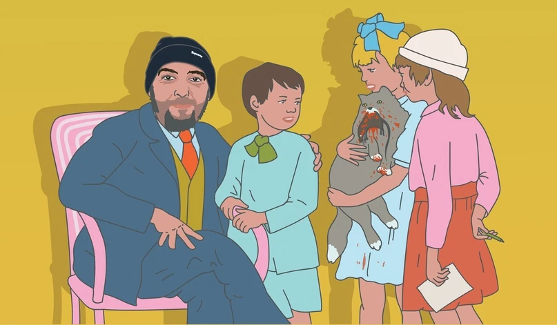
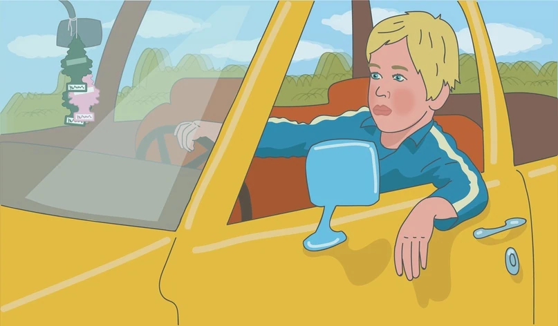
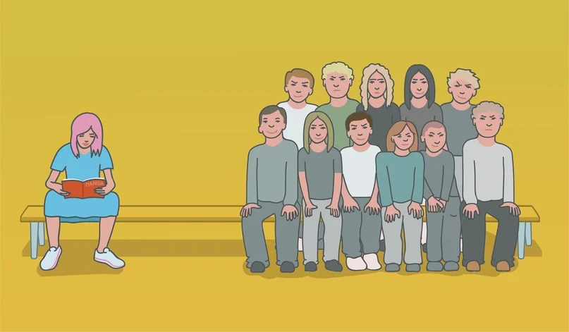

Какие только беды не изводят людей! Чтобы не сгинуть под ворохом проблем, обыватели бегут просить помощи на форумах. И тут на подмогу внезапно приходит Данила Блюз

В 2000-е легендарный журнал «Хакер» публиковал колонку Величайшего Гуманиста Всех Времен и Народов Дани Шеповалова. Даня отвечал на «ворованные» вопросы читательниц изданий вроде Cool Girl и «Лиза». И внес неоценимый вклад в психологическое здоровье страны — вправил кучу неокрепших, сбившихся с верного пути мозгов. До сих пор исцеленные с благодарностью вспоминают Даню, кто-то продолжает писать ему письма, кто-то ставит заздравные свечки в церкви, а кто-то отринул мирские блага и работает приемщиком стеклотары.
Данила Блюз решил продолжить славное дело Величайшего Гуманиста: ворвался на популярные психологические форумы, где люди тщетно изливают душу перед незнакомцами, и с триумфом ответил на неразрешимые вопросы читателей. Пунктуацию просителей мы сохранили в первозданном виде.
Добрый день! Я ухаживаю за свекром - инвалидом 1 группы ему 81 год, а он дрочит передо мной свой член, цепляется с вопросами интимного характера. Я уже не могу это все выносить, сдают нервы. Как его можно успокоить? (Анна)
А зачем его успокаивать? Пусть дедуля потеребонькает свою свистульку, жалко тебе, что ли? Человек уже одной ногой в могиле, другой — в гробу, он жопой уже тепло адского пламени чувствует, одна радость — попохабничать немного перед смертью. А ты и ее у него отнять хочешь! Нехорошо, дамочка, надо уважать стариков. Похвали дедушку за такую половую резвость, поцелуй его в макушку, выпей с ним по рюмашке корвалола и, может, угомонится он тогда. И уснет вечным сном с улыбкой на устах, а тебе за ласку свой стеклянный глаз и ковер с оленями завещает.
Если у девушки ребенок 1.5 г и муж, а она знакомится с мужчинами в интернете, чего ей не хватает как вы думаете? (Даша)
Мозгов ей не хватает, как и большинству из вашего подлого племени! Вы ж бабы — дуры, замуж выскочите, пузожителя заведете, а потом такие: «Ой, а счастья-то че-то нету!» Смотрите в Instagram или в «Одноклассниках» ленту, а там у всех прекрасная жизнь: мужики — работяги и красавцы, детки — умники и умницы, в огороде помидоры — во, огурцы — во, про картошку я вообще уже молчу.
И глядит несчастная баба на свое житье: мужик доходяга, в трикошке порванной стоит, ссыт в раковину и жопу чешет, ребенок обосрался и на обоях говном свастику нарисовал, а в огороде только крапива плодоносит — два метра вымахала. И вот баба думает, что у всех все хорошо, а у нее одной — плохо. Что прогадала она с мужиком и что рано этого высерка родила, а надо было повнимательнее быть, не цепляться за первого встречного. И начинается мозгоебательство ваше блядское, нервотрепка эта вечная. И мужик убегает нахуй из дома, баба находит другого, а тот еще хуже — он не в раковину ссыт, а под себя, когда спайсу перекурит и посреди комнаты валяется. И вот баба думает: «Ох, дура я, дура! А ведь бывший-то у меня золото был, а не мужик! Чего я ему мозги ебала?» А бывший уже другую нашел, которая не такая психичка, и сейчас с ней на новенькой «Ниве» рассекает по деревне. И все мужики уважительно говорят: «Во, Петрович поехал!» Так-то.
Я хочу уехать из дома в другой город мне 12 лет ! Стоит ли? (Глеб)
Конечно, старичок, дерзай, мир покоряется смелым! Возьми с собой нож, спички, соль, две пары носков, ружье, патроны. Оденься потеплее и отправляйся в путь. Во время своего странствия промышляй охотой, рыбной ловлей, ночуй в поле или где-нибудь на дереве, чтобы волки не съели или лоси не затоптали. Когда придешь в другой город, тебя обязательно возьмет в оборот местная братва.

Ты станешь зарабатывать на жизнь. Будешь либо попрошайкой (если жалкий), либо наперсточником (если хитрый), либо станешь вышибать деньги из попрошаек (если сильный), либо пойдешь уличной проституткой (если симпатичный), либо наркокурьером или закладчиком (если быстрый и ловкий). Рано или поздно криминальный образ жизни приведет тебя в тюрьму.
Там твою персону тоже не оставят без внимания. Если ты на воле себя хорошо покажешь — будешь в почете у братвы: станешь пить вкусный чифирь, курить вкусные сигареты и иметь золотые зубы и татуировки по всему телу. Ну а если покажешь себя на воле как ничтожество, крыса и тварь, то будешь спать у параши, докуривать чужие бычки и пить собственные слезы. В тюрьме заработаешь СПИД или туберкулез (в независимости от твоего статуса) и потом, спустя годы, умирая на желтой казенной простыне, вспомнишь родной дом, маму, папу, бабушку. И прослезишься, и поймешь, что лучше дома нет места на свете. Но зато ты прожил интересную, полную впечатлений жизнь. А так вырос бы каким-нибудь инженером с ипотекой, женой, тремя детьми. И нахера вот оно тебе, спрашивается, надо?
Часто, когда я вижу симпатичного внешне парня, я возбуждаюсь и даже ощущаю состояние эрекции. Но я уже несколько раз занимался любовью с девушками и получал от секса массу удовольствия. Как вы считаете: я гомосексуалист или я нормален? (Илья)
Хорошая постановка вопроса, Илья, очень правильная! Это в гейропах ихних гомосексуализм — норма. У нас, на благословенной черноземной Руси, слава богу, так никто не считает. У нас от гейства лечат сильнодействующими препаратами, душем Шарко, электрошоком и лоботомией. Поэтому, чтобы выяснить, нормальный ты человек или нет, тебе надо пососать кому-нибудь хуй. Известно, что гомосексуалисты очень любят сосать хуй, их от этого дела за уши не оттащишь. Нормальный же человек, взяв хуй в рот, сразу впадает в кому, его нужно срочно госпитализировать, а потом еще и крестить по новой.
Попроси какого-нибудь своего хорошего друга дать тебе пососать хуй. Разумеется, в этом деле он тебе не откажет — друг все-таки. Если тебе понравится — значит, увы, ты гей. Тебе надо срочно пойти и сдаться в местное отделение полиции. Если вдруг ты пососал хуй и ничего не понял, нужно повторить процедуру еще раз. Не понял во второй раз? Попробуй в третий! И так соси, пока не настанет ясность в голове: кто ты есть на самом деле.
Можно также попросить друга выебать тебя в жопу. В этом случае просветление должно настать гораздо быстрее. Главное — не отчаиваться и продолжать поиск себя. У некоторых на это вся жизнь уходит! Они уже в жопу трахались и пересосали всему городу, а все равно не могут понять, геи они или нет. Так и умирают в неведении.
Мои яички явно стали больше — это видно невооруженным глазом. Кроме того, последний месяц в области яичек я чувствую нечто вроде покалывания. Может, причина в том, что я занимаюсь мастурбацией? Но с некоторого времени я вообще перестал заниматься онанизмом, поскольку при мастурбации я чувствую в области яичек неприятные болевые ощущения. Вдруг это — рак яичек? (Михаил, 17 лет).
Экспертно заявляю, что ни частая, ни редкая мастурбация, ни даже ее полное отсутствие на боли в твоей мошонке никак не влияет. Я поп��обовал все, но больно моим яйцам было только один раз, когда я признался в любви девочке из соседнего подъезда. Ну как признался… задрал ей юбку. Так что лучше сходи к врачу, сами люди догадываются о своих болезнях только тогда, когда уже слишком поздно.
Здравствуйте! Меня зовут Алена. Мне 13 лет. У меня есть любимое увлечение: просмотр аниме и чтение манги. Моя мама всегда заявляет, что не может терпеть это и уговаривает меня заняться чем-нибудь полезным и нормальным. Посмотреть мультики. Погулять с друзьями. Мои же одноклассники всегда, когда видят, как я читаю мангу на перемене, начинают говорить обо мне. В классе даже есть один мальчик, который с насмешкой начинает обсуждать это, из-за чего я стараюсь скрывать свои намерения и ухожу гулять по школе до самого начала урока. Что мне делать? Как объяснить маме и одноклассникам, что эти увлечения - не повод для обсуждения и насмешек? Разве то, чем я занимаюсь, ненормально?
Алена, пришло время выбирать: либо признание окружающих, либо манга. Открою тебе секрет: ненормально все, что выделяет тебя из пресловутой серой массы. Даже если ты на переменах будешь разрабатывать лекарство от СПИДа, тебя все равно будут считать выскочкой. И найдется одноклассник, который громче всех скажет: «Да что она там про себя думает? Она что, лучше нас, что ли? Давайте нассым ей в пакет со сменкой!»

Поэтому, если хочешь признания окружающих, занимайся тем же, чем занимаются самые уважаемые люди в твоей школе: кури, крась лицо блядским макияжем, пей водку, придумывай обидные прозвища убогим одноклассникам, подрисовывай в учебниках гениталии возле ртов великих ученых и литераторов, плюйся из трубочки жвачкой в волосы учителям, когда они не видят, тегай стены огромным маркером, нюхай клей, переспи со старшеклассником, избей кого-нибудь или посади на нож, придумай себе крутое прозвище вроде «Диарея», «Поножовщина», «Бензопила», «Солевая», покрась волосы в яркий цвет, от одного взгляда на который у людей будет изжога, слушай на уроках громко музыку в телефоне, поставь на аватарку Майли Сайрус, ходи в порванных чулках и тяжелых кроссовках (или берцах), набей татуировку на лице, нюхай все, что предлагают, подожги мусорку, заведи блог в инстаграме, заразись венерической болезнью, отсиди сутки в обезьяннике, хами учителям, снимай это на видео, а потом выкладывай в интернет, сделай аборт, имитируй суицид, заведи себе полсотни шрамов на запястье, носи футболки с матерным словом на груди, наблюй директору школы на пиджак, опрокинь пинком коляску с младенцем, называй евреев «жидами», кавказцев — «чурками», азиатов — «гуками». Вот тогда все одноклассники будут говорить: «Вау, Аленка-то наша ваще крутая!»
Как заставить дочь ненавидеть бывшего? (Анонимно)
Сразу видно, что вы — заботливая мать: переживаете за судьбу дочери. Правильно, недостаточно того, чтобы девчонка просто рассталась с парнем, надо сделать так, чтобы она его еще и ненавидела! Ненавидела до зубовного скрежета, до боли в животе, до вспучивания глаз — как это наверняка делаете вы, вспоминая бывшего мужа, который бросил вас с дочкой и ушел к какой-то лярве.
Повесьте дома фотографию ее бывшего и сделайте традицией каждое утро материться и плевать в нее по полтора часа. Рассказывайте про пацана всякие кошмарные небылицы вроде: «Игорь-то твой, слышала, вчера всю ночь в бане с проститутками парился, а утром его голого нашли в парке на клумбе». Или: «Филипп твой вчера перед всеми хвастался, как ты его орально ублажала! Показывал весь процесс в лицах, да еще и на открытом микрофоне в нашем стендап-клубе. Все хохотали, а ему только это и нужно: говорит, тур по стране устроит, а потом «Олимпийский» соберет, как Данила Поперечный».
Освойте фотошоп и приклеивайте на снимках к бывшему дочери ее подруг и одноклассниц. Попросите соседа избить вас хорошенько, а потом скажите дочери, что это ее экс-бойфренд вас так отделал. Напишите заявление в полицию и подайте на него в суд. Судитесь до последнего, падайте в обморок, рыдайте, закатывайте истерики не только в зале суда, но еще и дома. Причитайте почаще: «Да за что же нам этот ирод достался?! Господи, когда это кончится?!» После многолетней судебной тяжбы, когда вас прижмут за клевету неопровержимыми доказательствами (сосед может расколоться), скажите, что руководствовались исключительно благими намерениями, да и вообще вы старая женщина, вы в маразме, и справку покажите специальную.
Ну и куда же в наш век без магии? Возьмите пучок лобковых волос дочкиного бывшего, сожгите их, а пепел истолките в ступке вместе с сушеными рыжиками, вороньей костью, собачьим зубом, таблеткой тарена и кубиком «Магги». Получившийся порошок подсыпьте дочери в еду или питье, произнеся следующее заклинание: «Черным лесом, старым погостом шла собака злая, а за ней — макака больная, а за ней — крыса седая. Разом все остановились и друг в дружку вцепились. Собака рычала, макака стучала, крыса пищала. Чтобы тебе, раба божья (имя женщины), и тебе, раб божий (имя мужчины), так друг дружку рвать и рычать, стучать и пищать. Тьфу, тьфу, тьфу. Ключ. Замок. Язык. Аминь». И будет ваша дочка прекрасно жить в ненависти и злобе до самой смерти.